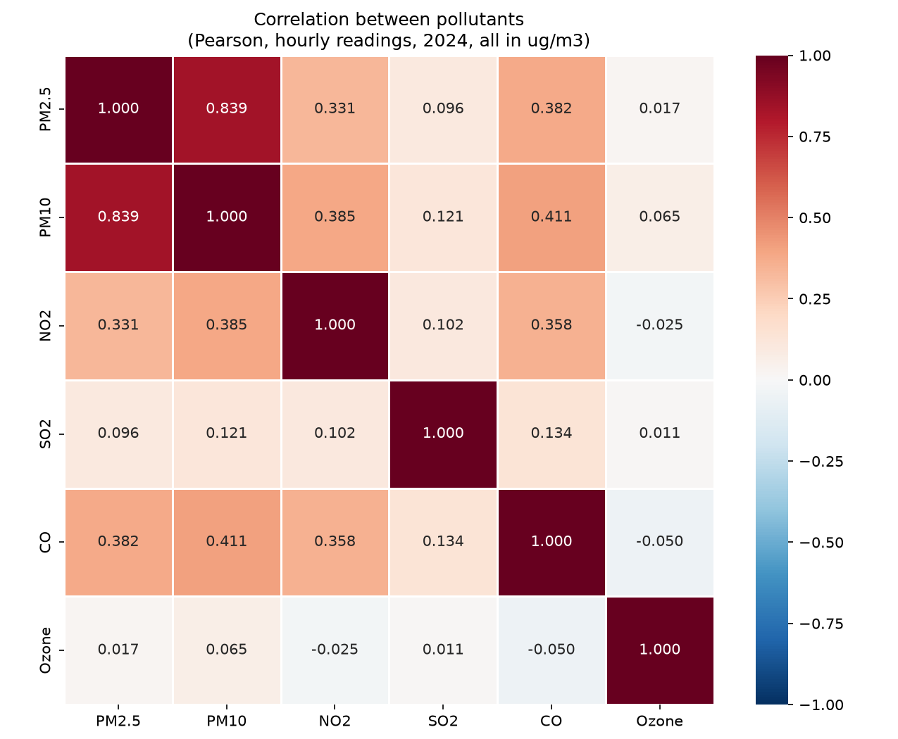
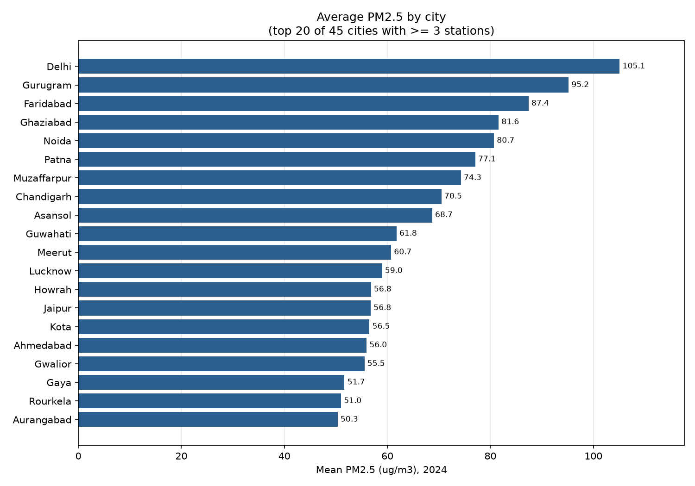
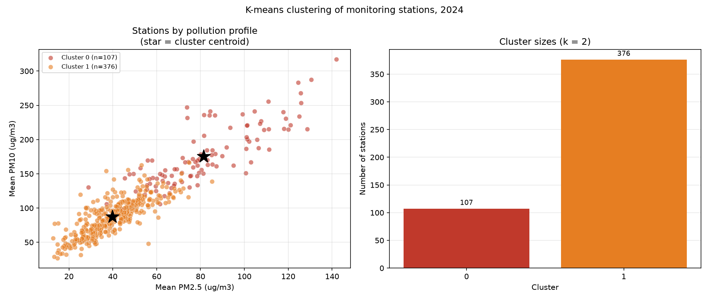
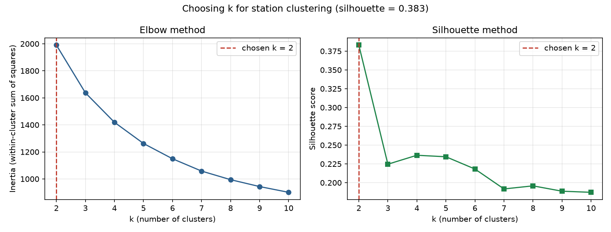
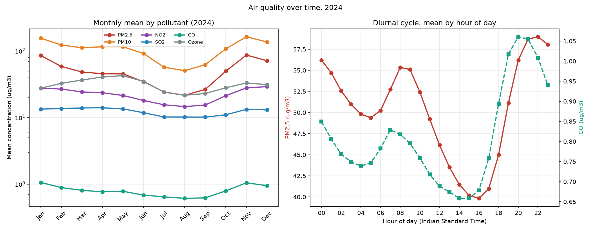
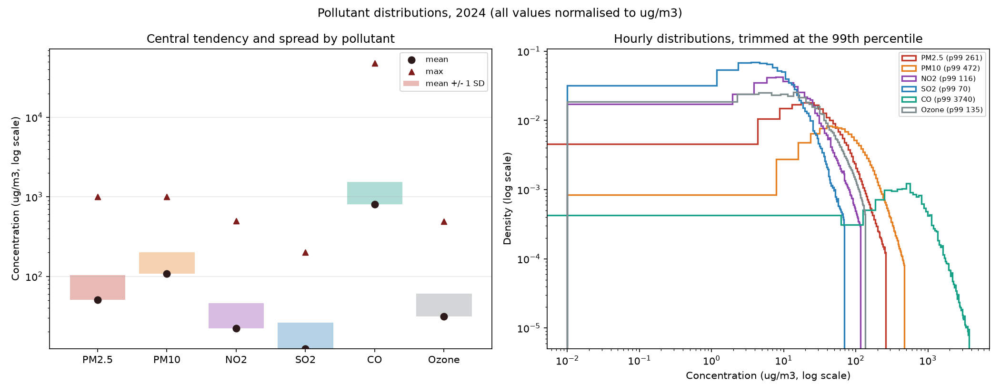

0 · Headline numbers
1 · Dataset & cleaning
Source: India Air Quality Database, XKDR Forum (airquality.xkdr.org), CC BY 4.0.
Full archive 196,521,834 rows · 558 stations · Jan 2009 – Mar 2026.
Scope here: calendar 2024. Long format — one row per station × pollutant × hour.
14 pollutants published; six core analysed: PM2.5, PM10, NO2, SO2, CO, Ozone.
CO is published in mg/m³; all others in µg/m³ — the pipeline converts CO ×1000.
Missing readings are reported, never imputed: PM2.5 6.35% · PM10 7.96% · NO2 5.12% · SO2 7.94% · CO 5.16% · Ozone 8.53%.
2 · Safe thresholds
Indian National Ambient Air Quality Standards (NAAQS, CPCB, 2009) — the regulatory limits a city is judged against — beside the stricter WHO 2021 guidelines:
| Pollutant | NAAQS (µg/m³) | Averaging time | WHO 2021 (µg/m³) | WHO averaging |
|---|---|---|---|---|
| PM2.5 | 60 | 24-hour | 15 | 24-hour |
| PM10 | 100 | 24-hour | 45 | 24-hour |
| NO2 | 80 | 24-hour | 25 | 24-hour |
| SO2 | 50 | 24-hour | 40 | 24-hour |
| CO | 2,000 | 8-hour | 4,000 | 24-hour |
| Ozone | 100 | 8-hour | 100 | 8-hour |
The NAAQS are 24-hour means for PM2.5, PM10, NO2 and SO2, and 8-hour means for CO and Ozone. The analysis below therefore compares daily 24-hour means to the PM/NO2/SO2 standards and 8-hour block means (00–07, 08–15, 16–23) to the CO and Ozone standards — each pollutant against its own averaging time, as the standards specify.
3 · What exceeded — city by city
Network-wide exceedances
| Pollutant | Standard | Averaging | Observations | Above | % above | Cities above | Worst city | Worst city % |
|---|---|---|---|---|---|---|---|---|
| PM2.5 | 60 | 24-hour | 177,824 | 48,220 | 27.1% | 48 | Byrnihat | 80.2% |
| PM10 | 100 | 24-hour | 174,707 | 74,081 | 42.4% | 121 | Sri Ganganagar | 92.8% |
| NO2 | 80 | 24-hour | 176,758 | 3,521 | 2.0% | 1 | Dhanbad | 34.1% |
| SO2 | 50 | 24-hour | 172,448 | 2,947 | 1.7% | 0 | Mandideep | 37.3% |
| CO | 2,000 | 8-hour | 514,606 | 24,610 | 4.8% | 3 | Vapi | 71.0% |
| Ozone | 100 | 8-hour | 499,701 | 13,049 | 2.6% | 0 | Baddi | 24.4% |
"Cities above" counts cities whose annual mean exceeds the 24-hour standard — a chronic-exceedance screening: a city whose annual average sits above a 24-hour limit is above it chronically, not just on bad days. Observations are station-days (24-hour means) for PM2.5/PM10/NO2/SO2 and 8-hour blocks for CO/Ozone.
Worst 15 cities — mean µg/m³ and % of days above standard
| City | State | PM2.5 | PM10 | NO2 | SO2 | CO | Ozone | Main offender |
|---|---|---|---|---|---|---|---|---|
| Sri Ganganagar | Rajasthan | 85.65 (71%) | 235.55 (93%) | 44.65 (8%) | 5.31 (0%) | 1,387.49 (21%) | 35.98 (0%) | PM10 |
| Greater Noida | Uttar Pradesh | 83.63 (61%) | 225.36 (89%) | 34.01 (4%) | 12.67 (0%) | 1,162.47 (11%) | 41.05 (9%) | PM10 |
| Hanumangarh | Rajasthan | 77.66 (53%) | 175.97 (83%) | 24.58 (0%) | 8.45 (0%) | 1,097.01 (7%) | 26.33 (0%) | PM10 |
| Gurugram | Haryana | 94.15 (70%) | 191.82 (82%) | 17.19 (0%) | 10.26 (1%) | 1,550.56 (32%) | 32.12 (1%) | PM10 |
| Byrnihat | Assam | 126.52 (80%) | 211.35 (82%) | 26.19 (0%) | 17.00 (4%) | 858.48 (8%) | 21.70 (0%) | PM10 |
| Ghaziabad | Uttar Pradesh | 81.41 (53%) | 181.35 (81%) | 44.15 (9%) | 13.42 (0%) | 1,019.09 (8%) | 32.09 (4%) | PM10 |
| Bikaner | Rajasthan | 55.54 (31%) | 169.89 (80%) | 32.47 (2%) | 4.20 (0%) | 949.72 (8%) | 45.81 (1%) | PM10 |
| Delhi | Delhi | 104.60 (62%) | 212.31 (80%) | 42.96 (10%) | 15.00 (1%) | 1,286.23 (14%) | 34.24 (5%) | PM10 |
| Bhiwadi | Rajasthan | 71.76 (55%) | 166.09 (78%) | 26.38 (0%) | 10.46 (0%) | 1,067.91 (10%) | 34.17 (2%) | PM10 |
| Ballabgarh | Haryana | 78.12 (64%) | 167.97 (78%) | 10.97 (0%) | 15.13 (3%) | 860.02 (7%) | 20.04 (0%) | PM10 |
| Noida | Uttar Pradesh | 80.71 (53%) | 184.62 (77%) | 42.15 (12%) | 13.53 (0%) | 1,146.84 (12%) | 34.73 (5%) | PM10 |
| Faridabad | Haryana | 87.14 (60%) | 173.00 (77%) | 21.46 (1%) | 11.16 (0%) | 909.16 (5%) | 24.04 (3%) | PM10 |
| Muzaffarnagar | Uttar Pradesh | 82.94 (66%) | 169.15 (77%) | 23.31 (0%) | 17.69 (0%) | 887.37 (4%) | 37.94 (1%) | PM10 |
| Baddi | Himachal Pradesh | 67.21 (42%) | 147.72 (76%) | 22.09 (0%) | 26.42 (9%) | 690.51 (0%) | 69.09 (24%) | PM10 |
| Bileipada | Odisha | 52.66 (44%) | 163.99 (75%) | 9.67 (0%) | 17.45 (1%) | 545.75 (0%) | 26.36 (1%) | PM10 |
A cell reads mean ( % of days above ); — means the city has no
data for that pollutant. Cities are ranked by their worst pollutant. The National Capital
Region belt (Greater Noida, Gurugram, Ghaziabad, Delhi, Noida, Faridabad, Ballabgarh)
dominates the list, joined by Rajasthan's Sri Ganganagar, Hanumangarh, Bikaner and
Bhiwadi. Byrnihat (Assam) has the worst PM2.5 rate but a single station, so it is
excluded from city rankings that require ≥ 3 stations. Full table for all 245 cities:
results/exceedance_by_city.csv.
4 · Pollutant statistics (µg/m³)
| Pollutant | n | missing | mean | median | min | max | stddev |
|---|---|---|---|---|---|---|---|
| PM2.5 | 3,932,392 | 266,429 | 50.38 | 35.42 | 0.00 | 1,000.00 | 53.50 |
| PM10 | 3,864,549 | 334,272 | 108.17 | 82.25 | 0.01 | 1,000.00 | 93.28 |
| NO2 | 3,983,789 | 215,032 | 22.20 | 15.37 | 0.01 | 497.77 | 23.99 |
| SO2 | 3,865,493 | 333,328 | 12.34 | 8.60 | 0.01 | 199.90 | 13.74 |
| CO | 3,982,313 | 216,508 | 806.18 | 630.00 | 0.00 | 48,280.00 | 729.77 |
| Ozone | 3,840,559 | 358,262 | 31.27 | 22.48 | 0.01 | 490.60 | 29.22 |
Every pollutant is right-skewed: median sits well below the mean, so the median is the better "typical" figure. PM2.5 and PM10 top out at exactly 1000.00 — CPCB's instrument reporting ceiling, so the top of those distributions is censored. CO shown after ×1000 conversion (source mg/m³ → µg/m³). n = hourly readings; missing = station-pollutant-hours with no reading.
5 · Correlation — all 15 pairs
| Pair | Pearson r |
|---|---|
| PM2.5-PM10 | +0.8389 |
| PM10-CO | +0.4112 |
| PM10-NO2 | +0.3852 |
| PM2.5-CO | +0.3816 |
| NO2-CO | +0.3583 |
| PM2.5-NO2 | +0.3314 |
| SO2-CO | +0.1344 |
| PM10-SO2 | +0.1208 |
| NO2-SO2 | +0.1021 |
| PM2.5-SO2 | +0.0957 |
| PM10-Ozone | +0.0651 |
| PM2.5-Ozone | +0.0168 |
| SO2-Ozone | +0.0107 |
| NO2-Ozone | -0.0254 |
| CO-Ozone | -0.0502 |

Pearson's r, pairwise complete observations. PM2.5–PM10 at 0.839 is the strongest relationship (shared combustion source, co-transported). CO tracks the traffic pollutants (PM10 0.411, NO2 0.358). Ozone is essentially uncorrelated with every other pollutant (|r| ≤ 0.065) — it forms photochemically from traffic-emitted nitrogen oxides, so it behaves inversely to the combustion pollutants. r is scale-invariant, which is why it was unaffected by the CO unit conversion.
6 · Temporal analysis
Monthly means (µg/m³)
| Month | PM2.5 | PM10 | NO2 | SO2 | CO | Ozone |
|---|---|---|---|---|---|---|
| Jan | 85.37 | 155.46 | 27.50 | 13.38 | 1,060.08 | 27.55 |
| Feb | 58.56 | 122.89 | 26.79 | 13.65 | 886.07 | 32.66 |
| Mar | 48.35 | 111.70 | 24.23 | 13.92 | 807.54 | 36.53 |
| Apr | 45.45 | 115.53 | 23.54 | 14.01 | 765.31 | 40.70 |
| May | 45.23 | 115.42 | 21.44 | 13.50 | 781.06 | 42.56 |
| Jun | 34.53 | 91.53 | 18.04 | 11.80 | 683.87 | 34.84 |
| Jul | 24.14 | 56.90 | 15.53 | 10.20 | 643.58 | 24.09 |
| Aug | 21.58 | 50.60 | 14.60 | 10.18 | 611.21 | 21.59 |
| Sep | 26.44 | 62.19 | 15.41 | 10.13 | 620.54 | 22.97 |
| Oct | 49.68 | 107.60 | 21.27 | 11.01 | 792.91 | 27.99 |
| Nov | 86.77 | 163.18 | 27.90 | 13.25 | 1,045.87 | 33.03 |
| Dec | 71.28 | 136.51 | 29.10 | 13.03 | 948.74 | 31.17 |
PM2.5 swings fourfold: 86.8 in November against 21.6 in August (highlighted) — the monsoon scavenges particles. Winter brings cool, stagnant air and crop-residue burning.
Daily cycle
| Pollutant | Peak | Minimum |
|---|---|---|
| PM2.5 | 22:00 — 58.97 | 16:00 — 39.83 |
| NO2 | 20:00 — 28.80 | 14:00 — 17.80 |
| CO | 20:00 — 1,060.74 | 15:00 — 658.36 |
What the daily cycle is. It answers: within a single day, when does pollution build, and when does it clear?
NO2 and CO are primary emissions — they come straight out of a tailpipe — so they spike at 20:00, the evening rush hour (NO2 28.8, CO 1060.7 µg/m³), and fall in the afternoon when traffic is lightest.
PM2.5 is an accumulating pollutant. It forms in the atmosphere from gases rather than being emitted directly, so it builds through the day and peaks two hours later, at 22:00 (59.0 µg/m³), and is lowest mid-afternoon (16:00, 39.8) when the atmosphere mixes best.
The two-hour offset between the traffic peak (20:00) and the PM2.5 peak (22:00) is the signature of an accumulating secondary pollutant versus a directly emitted one — same pollutants, different physics.
7 · Location-wise — mean PM2.5 by city (≥ 3 stations)
| City | Stations | Mean PM2.5 (µg/m³) | min | max |
|---|---|---|---|---|
| Delhi | 39 | 105.09 | 0.02 | 1,000.00 |
| Gurugram | 4 | 95.18 | 0.03 | 999.99 |
| Faridabad | 4 | 87.41 | 0.50 | 964.27 |
| Ghaziabad | 3 | 81.60 | 1.00 | 901.00 |
| Noida | 4 | 80.69 | 0.75 | 993.00 |
| Patna | 6 | 77.07 | 0.10 | 925.70 |
| Muzaffarpur | 3 | 74.28 | 0.15 | 934.00 |
| Chandigarh | 3 | 70.50 | 0.65 | 882.00 |
| Asansol | 4 | 68.71 | 0.08 | 487.37 |
| Guwahati | 3 | 61.77 | 0.12 | 902.10 |

Delhi and its four NCR neighbours take the top five — contiguous cities sharing one air shed. The ≥ 3 station filter matters: without it a single-station town (Byrnihat, 128.7 µg/m³ from one monitor) would outrank Delhi.
8 · K-means clustering of stations
Choosing k — the two methods disagree (shown, not hidden)
| k | inertia | silhouette |
|---|---|---|
| 2.0 | 1,990.24 | 0.3830 |
| 3.0 | 1,637.04 | 0.2246 |
| 4.0 | 1,419.16 | 0.2365 |
| 5.0 | 1,262.50 | 0.2345 |
| 6.0 | 1,149.31 | 0.2182 |
| 7.0 | 1,058.34 | 0.1917 |
| 8.0 | 994.65 | 0.1958 |
| 9.0 | 943.65 | 0.1887 |
| 10.0 | 901.00 | 0.1872 |
k = 2 chosen on silhouette (0.383); the elbow falls at k = 3 (0.225). Silhouette is weighted higher because it measures separation directly, whereas inertia must fall by construction.
Cluster profiles (µg/m³)
| Cluster | Stations | PM2.5 | PM10 | NO2 | SO2 | CO | Ozone |
|---|---|---|---|---|---|---|---|
| 0.0 | 107 | 81.45 | 175.70 | 37.97 | 15.32 | 1,250.71 | 36.70 |
| 1.0 | 376 | 39.84 | 87.06 | 17.56 | 11.60 | 672.50 | 28.34 |
Cluster 0 (107 stations) is roughly twice as polluted as cluster 1 (376 stations) on every combustion pollutant, yet spans 48 cities — the split is not a simple "Delhi vs rest". A silhouette of 0.383 means real but not sharp structure: air quality grades continuously between stations.


Why K-means was performed. The first four components describe pollution — how much, where, when, and how pollutants relate. K-means answers a different question: do monitoring stations fall into distinct pollution profiles, and which pollutants define them?
Each station becomes a feature vector — its annual mean of all six pollutants — z-scored so no single pollutant dominates (the six features differ in spread by 115×; unscaled, K-means would effectively cluster on PM10 alone). 483 of 538 stations have complete vectors; the 55 with gaps were dropped, not imputed.
The result is a two-group split: 107 stations averaging roughly twice the combustion pollutants of the other 376. That identifies the heavily-affected stations as a group — the subset where mitigation matters most — without assuming in advance which cities belong there.
9 · Remaining charts


10 · How these numbers were produced
Correctness: two independently written programs (Pig and MapReduce) process the same
rows with the same filters and agree exactly at 23,469,095; every raw row is reconciled above;
31 automated checks pass (./tests/test_pipeline.sh). This dashboard is a static file —
no server, no database, no JavaScript. Regenerate charts with visualization/*.py and
this page with scripts/make_dashboard.py.